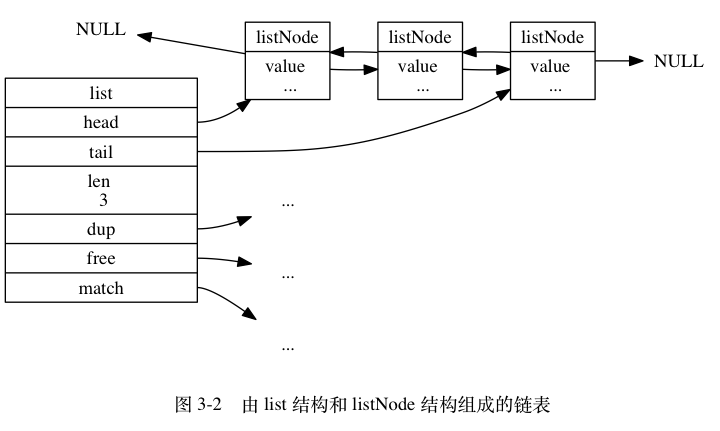

数据结构 #
链表 #
链表提供了高效的节点重排能力，以及顺序性的节点访问方式，并且可以通过增删节点来灵活地调整链表的长度。
作为一种常用数据结构，链表内置在很多高级的编程语言里面，因为 Redis 使用的 C 语言并没有内置这种数据结构，所以 Redis 构建了自己的链表 实现。
链表节点的实现 #
每个链表节点使用一个 adlist.h/listNode 结构：
typedef struct listNode {
// 前置节点
struct listNode *prev;
// 后置节点
struct listNode *next;
// 节点的值
void *value;
} listNode;
使用 adlist.h/list 来持有链表：
typedef struct list {
// 表头节点
listNode *head;
// 表尾节点
listNode *tail;
// 链表所包含的节点数量
unsigned long len;
// 节点值复制函数
void *(*dup)(void *ptr);
// 节点值释放函数
void (*free)(void *ptr);
// 节点值对比函数
int (*match)(void *ptr, void *key);
} list;
list 结构为链表提供了表头指针 head 、表尾指针 tail ，以及链表长度计数器 len ，而 dup 、 free 和 match 成员则是用
于实现多态链表所需的类型特定函数：
dup函数用于复制链表节点所保存的值；free函数用于释放链表节点所保存的值；match函数则用于对比链表节点所保存的值和另一个输入值是否相等。

Redis 的链表实现的特性：
- 双向：链表节点带有
prev和next指针，获取某个节点的前置节点和后置节点的复杂度都是O(1)。 - 无环：表头节点的
prev指针和表尾节点的next指针都指向NULL，对链表的访问以NULL为终点。 - 带表头指针和表尾指针：通过
list结构的head指针和tail指针，程序获取链表的表头节点和表尾节点的复杂度为O(1)。 - 带链表长度计数器：程序使用
list结构的len属性来对list持有的链表节点进行计数，程序获取链表中节点数量的复杂度为O(1)。 - 多态：链表节点使用
void*指针来保存节点值， 并且可以通过list结构的dup、free、match三个属性为节点值设置类型特 定函数，所以链表可以用于保存各种不同类型的值。
跳跃表 #
跳跃表（skiplist）是一种有序数据结构，它通过在每个节点中维持多个指向其他节点的指针，从而达到快速访问节点的目的。
Redis 只在两个地方用到了跳跃表 一个是实现有序集合键，另一个是在集群节点中用作内部数据结构。
跳跃表的简单解释 #
想想一个创业公司，刚开始只有几个人，团队成员之间人人平等，都是联合创始人。随着公司的成长，人数渐渐变多，团队沟通成本随之增加。这时候就 会引入组长制，对团队进行划分。每个团队会有一个组长。开会的时候分团队进行，多个组长之间还会有自己的会议安排。公司规模进一步扩展，需要再增 加一个层级 —— 部门，每个部门会从组长列表中推选出一个代表来作为部长。部长们之间还会有自己的高层会议安排。
跳跃列表就是类似于这种层级制，最下面一层所有的元素都会串起来。然后每隔几个元素挑选出一个代表来，再将这几个代表使用另外一级指针串起来。然 后在这些代表里再挑出二级代表，再串起来。最终就形成了金字塔结构。
跳跃表之所以跳跃，是因为内部的元素可能身兼数职，比如下节图中的第一个节点，同时处于 L1、L2、L3 和 L4 层，可以快速在不同层次之间进行跳跃。
跳跃表的实现 #
Redis 的跳跃表由 redis.h/zskiplistNode 和 redis.h/zskiplist 两个结构定义，其中 zskiplistNode 结构用于表示跳跃表节点，而 zskiplist 结构则用于保存跳跃表
节点的相关信息，比如节点的数量，以及指向表头节点和表尾节点的指针等等。

zskiplist 结构， 该结构包含以下属性：
header：指向跳跃表的表头节点。tail：指向跳跃表的表尾节点。level：记录目前跳跃表内，层数最大的那个节点的层数（表头节点的层数不计算在内）。length：记录跳跃表的长度，也即是，跳跃表目前包含节点的数量（表头节点不计算在内）。
zskiplistNode 结构， 该结构包含以下属性：
- 层（level）：节点中用 L1 、 L2 、 L3 等字样标记节点的各个层， L1 代表第一层， L2 代表第二层，以此类推。每个层都带有两个属性：前进指针和跨度。 前进指针用于访问位于表尾方向的其他节点，而跨度则记录了前进指针所指向节点和当前节点的距离。在上面的图片中，连线上带有数字的箭头就代表前进 指针，而那个数字就是跨度。当程序从表头向表尾进行遍历时，访问会沿着层的前进指针进行。
- 后退（backward）指针：节点中用 BW 字样标记节点的后退指针，它指向位于当前节点的前一个节点。后退指针在程序从表尾向表头遍历时使用。
- 分值（score）：各个节点中的 1.0 、 2.0 和 3.0 是节点所保存的分值。在跳跃表中，节点按各自所保存的分值从小到大排列。
- 成员对象（obj）：各个节点中的 o1 、 o2 和 o3 是节点所保存的成员对象。
跳跃表节点 #
redis.h/zskiplistNode 结构定义：
typedef struct zskiplistNode {
// 后退指针
struct zskiplistNode *backward;
// 分值
double score;
// 成员对象
robj *obj;
// 层
struct zskiplistLevel {
// 前进指针
struct zskiplistNode *forward;
// 跨度
unsigned int span;
} level[];
} zskiplistNode;
层 #
level 数组可以包含多个元素，每次创建一个新跳跃表节点的时候，程序都根据幂次定律 （power law，越大的数出现的概率越小） 随机生成一个介
于 1 和 32 之间的值作为 level 数组的大小， 这个大小就是层的“高度”。
程序可以通过这些层来加快访问其他节点的速度，一般来说，层的数量越多，访问其他节点的速度就越快。
前进指针：
每个层都有一个指向表尾方向的前进指针（level[i].forward 属性），用于从表头向表尾方向访问节点。
跨度：
层的跨度（level[i].span 属性）用于记录两个节点之间的距离：
- 两个节点之间的跨度越大， 它们相距得就越远。
- 指向
NULL的所有前进指针的跨度都为 0 ，因为它们没有连向任何节点。
初看上去，很容易以为跨度和遍历操作有关，但实际上并不是这样 —— 遍历操作只使用前进指针就可以完成了，跨度实际上是用来计算排位（rank） 的：在查找某个节点的过程中，将沿途访问过的所有层的跨度累计起来，得到的结果就是目标节点在跳跃表中的排位。
例如，前面途中在跳跃表中查找分值为 3.0 、成员对象为 o3 的节点时，沿途经历的层：查找的过程只经过了一个层，并且层的跨度为 3 ，所以 目标节点在跳跃表中的排位为 3 。
后退指针：
节点的后退指针（backward 属性）用于从表尾向表头方向访问节点：跟可以一次跳过多个节点的前进指针不同，因为每个节点只有一个后退指针，所以
每次只能后退至前一个节点。
分值和成员：
- 节点的分值（
score属性）是一个 double 类型的浮点数， 跳跃表中的所有节点都按分值从小到大来排序。 - 节点的成员对象（
obj属性）是一个指针， 它指向一个字符串对象， 而字符串对象则保存着一个 SDS 值。
同一个跳跃表中，各个节点保存的成员对象必须是唯一的，但是多个节点保存的分值却可以是相同的**：分值相同的节点将按照成员对象在字典 序中的大小来进行排序，成员对象较小的节点会排在前面（靠近表头的方向），而成员对象较大的节点则会排在后面（靠近表尾的方向）。
跳跃表 #
多个跳跃表节点就可以组成一个跳跃表，通过使用一个 zskiplist 结构来持有这些节点，程序可以更方便地对整个跳跃表进行处理，比如快速访问
跳跃表的表头节点和表尾节点，又或者快速地获取跳跃表节点的数量（也即是跳跃表的长度）等信息。
typedef struct zskiplist {
// 表头节点和表尾节点
struct zskiplistNode *header, *tail;
// 表中节点的数量
unsigned long length;
// 表中层数最大的节点的层数
int level;
} zskiplist;
header 和 tail 指针分别指向跳跃表的表头和表尾节点，通过这两个指针，程序定位表头节点和表尾节点的复杂度为 O(1)。
通过使用 length 属性来记录节点的数量，程序可以在 O(1) 复杂度内返回跳跃表的长度，注意表头节点不计算在内。
level 属性则用于在 O(1) 复杂度内获取跳跃表中层高最大的那个节点的层数量，注意表头节点的层高并不计算在内。
整数集合 #
整数集合（intset）是集合键的底层实现之一：当一个集合只包含整数值元素，并且这个集合的元素数量不多时，Redis 就会使用整数集合作为集
合键的底层实现。
整数集合的实现 #
整数集合它可以保存类型为 int16_t 、 int32_t 或者 int64_t 的整数值，并且保证集合中不会出现重复元素。
intset.h/intset 结构：
typedef struct intset {
// 编码方式
uint32_t encoding;
// 集合包含的元素数量
uint32_t length;
// 保存元素的数组
int8_t contents[];
} intset;
contents 数组是整数集合的底层实现：整数集合的每个元素在数组中按值的大小从小到大有序地排列，并且数组中不包含任何重复项。
虽然 intset 结构将 contents 属性声明为 int8_t 类型的数组，但实际上 contents 数组并不保存任何 int8_t 类
型的值 —— contents 数组的真正类型取决于 encoding 属性的值：
- 如果
encoding属性的值为INTSET_ENC_INT16，那么contents就是一个int16_t类型的数组，int16_t类型的整 数值（最小值为-32,768，最大值为32,767）。 - 如果
encoding属性的值为INTSET_ENC_INT32，那么contents就是一个int32_t类型的数组，int32_t类型的整 数值（最小值为-2,147,483,648，最大值为2,147,483,647）。 - 如果
encoding属性的值为INTSET_ENC_INT64，那么contents就是一个int64_t类型的数组，int64_t类型的 整数值（最小值为-9,223,372,036,854,775,808，最大值为9,223,372,036,854,775,807）。
升级 #
当我们要将一个新元素添加到整数集合里面，并且新元素的类型比整数集合现有所有元素的类型都要长时，整数集合需要先进行升级（upgrade），然后 才能将新元素添加到整数集合里面。
升级整数集合并添加新元素共分为三步进行：
- 根据新元素的类型，扩展整数集合底层数组的空间大小，并为新元素分配空间。
- 将底层数组现有的所有元素都转换成与新元素相同的类型，并将类型转换后的元素放置到正确的位上，而且在放置元素的过程中，需要继续维持底层 数组的有序性质不变。
- 将新元素添加到底层数组里面。
例如，一个 INTSET_ENC_INT16 编码的整数集合，包含三个 int16_t 类型的元素（1，2，3），每个元素都占用 16 位空间， 所以整数集合
底层数组的大小为 3 * 16 = 48 位。
现在要将类型为 int32_t 的整数值 65535 添加到整数集合里面，因为 65535 的类型 int32_t 比整数集合当前所有元素的类型都要长，所以在
将 65535 添加到整数集合之前，程序需要先对整数集合进行升级。
- 升级首先，对底层数组进行空间重分配。每个
int32_t整数值占用 32 位空间，四个元素就是32 * 4 = 128位。 - 空间重分配之后，数组原有的三个元素仍然是
int16_t类型， 还保存在数组的前 48 位里面，接下来要做的就是将这三个元素转换成int32_t类型，并将转换后的元素放置到正确的位上面。 - 将新元素添加到底层数组里面。
升级的好处 #
升级策略有两个好处：
- 是提升整数集合的灵活性，整数集合可以通过自动升级底层数组来适应新元素，所以我们可以随意地将
int16_t、int32_t或者int64_t类型的整数添加到集合中，而不必担心出现类型错误，这种做法非常灵活。 - 节约内存，要让一个数组可以同时保存
int16_t、int32_t、int64_t三种类型的值，最简单的做法就是直接使用int64_t类型的数 组作为整数集合的底层实现。不过这样一来，即使添加到整数集合里面的都是int16_t类型或者int32_t类型的值，数组都需要使用int64_t类型的空间去保存它们，从而出现浪费内存的情况。整数集合现在的做法既可以让集合能同时保存三种不同类型的值，又可以确保升级操作只会在有需要的 时候进行，这可以尽量节省内存。
不支持降级 #
整数集合不支持降级操作，一旦对数组进行了升级，编码就会一直保持升级后的状态。